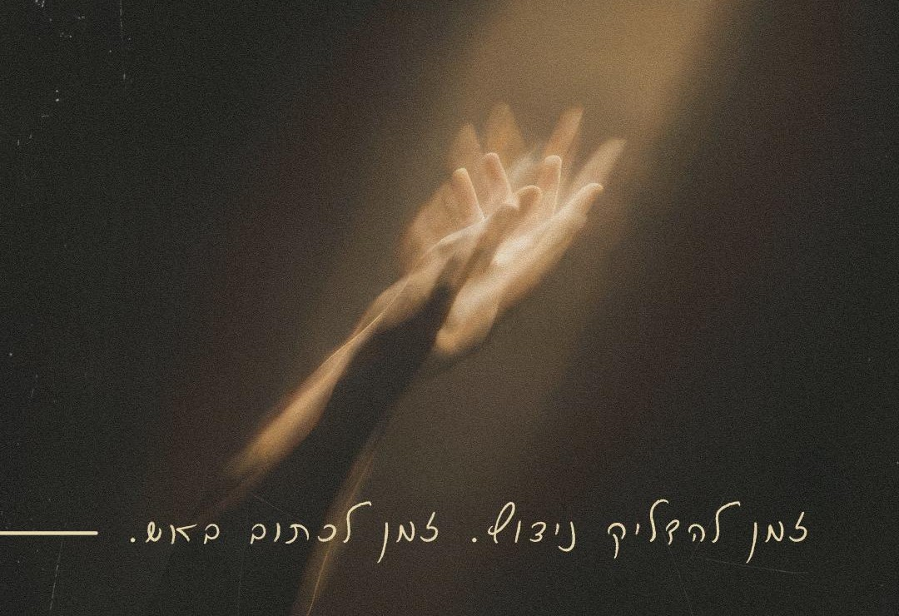
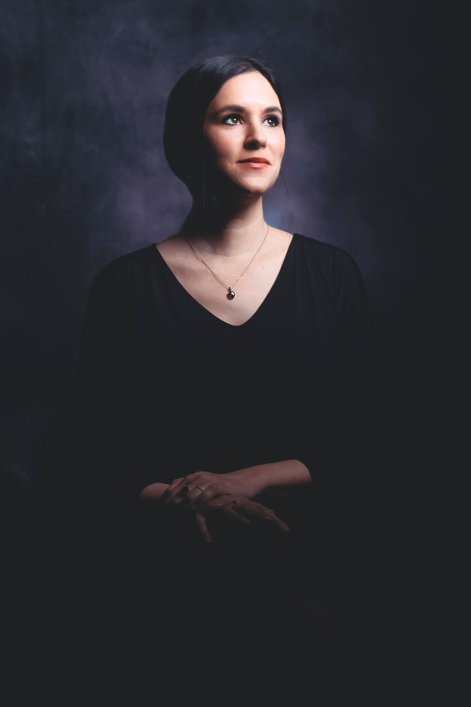
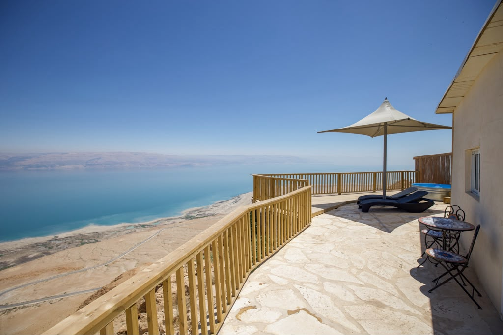
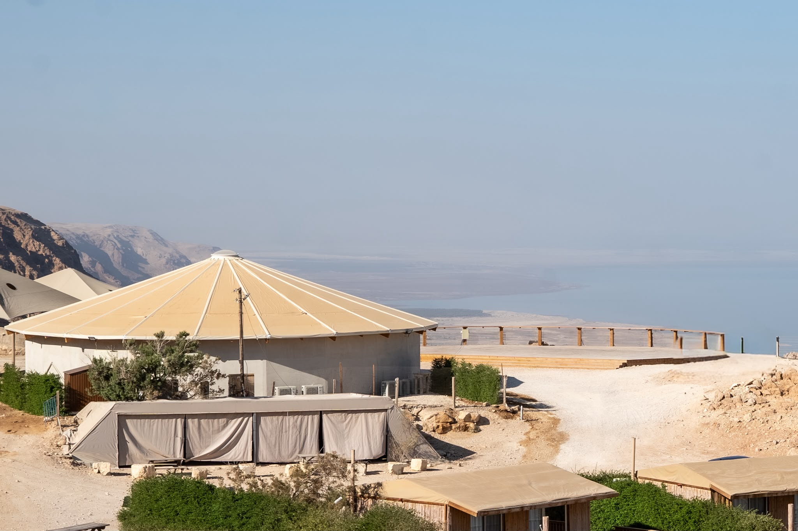
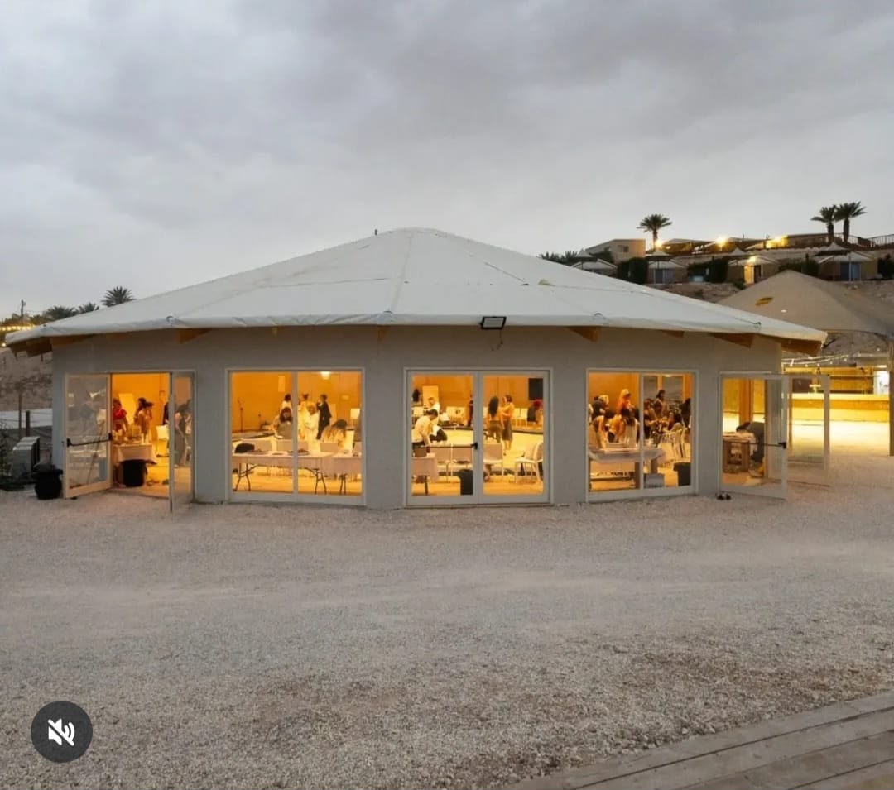

מעשה אותיות
ריטריט יום של כתיבה עם אמילי עמרוסי

גללי למטה
הי, כאן אמילי עמרוסי
הגחל שלך לא כבה.
אפשר להצית את הניצוץ. לחולל בעירה טובה. גם לשלוט בלהבה.
ניפגש בחאן מצוקי דרגות היפהפה, ליום מרוכז (ריטריטון), עם ארוחות מלאות, סדנת תנועת לשונות אש עם שקמה גנזל המופלאה, וסדנאות כתיבה שבהן נחקור את האש היוקדת בתוכך.
מזמינה אותך להצטרף אליי ליום שכולו שיגעון חיובי. ניתוק מדברי. וחיבוק לעצמך.

מה מחכה לנו?
-
סדנאות הכתיבה של אמילי
כתיבה כדיאלוג עם התת-מודע ועם העל-מודע — תרגילים קצרים וממוקדים, וקטעי לימוד שביניהם.
-
סדנת תנועה עם שקמה גנזל
תנועת לשונות אש — להעיר את הגוף ואת האש הפנימית, ולהתחבר מחדש לעצמך דרך התנועה.
-
ארוחות מלאות ופינוקים
ארוחות טריות, שופעות וטעימות — ולאורך כל היום פינת פינוק עם עוגות, שתייה חמה וקרה, ופירות.
המקום בו ניפגש
חאן על המצוק במצוקי דרגות, על קו ים המלח, במרחב השקט והפתוח של המדבר.



בריטריט הזה אנחנו לא לומדות לכתוב. אנחנו לומדות להכיר את עצמנו באמצעות הכתיבה. לפתוח לעצמנו חלון לרוח. לשאול את השאלות הנכונות כדי לבחור את השביל הנכון. יום של עומק, צמיחה, פענוח עצמי, הפוגה, שחרור. לברוא לעצמך אדמה — ולזכור שיש שמיים.
המחיר
מחיר מוקדם עד 30/11 · כולל סדנאות, ארוחות מלאות ופינוקים
מספר המקומות מוגבל
אמילי אני איתךשאלות ותשובות
מה זה מעשה אותיות?
האם הקבוצה היא על טהרת הנשים?
למה דווקא בים המלח?
מה אוכלים?
האם יש הנחות?
איך מתבצע התרגול בסדנה?
אני מפחדת להגיע לבד
אם את אישה שנכוותה פעם או פעמיים,
שלא נשרפה – אלא חושלה,
שהגחלת שלה עוד לוחשת מתחת לאפר,
ורוצה שוב לבעור,
בואי איתי.